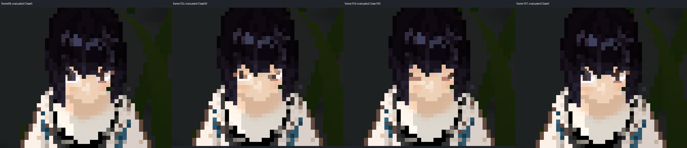
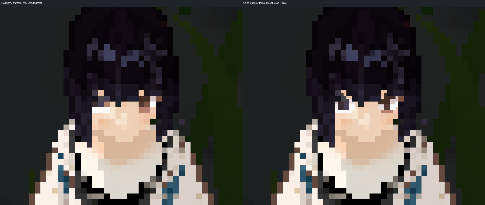
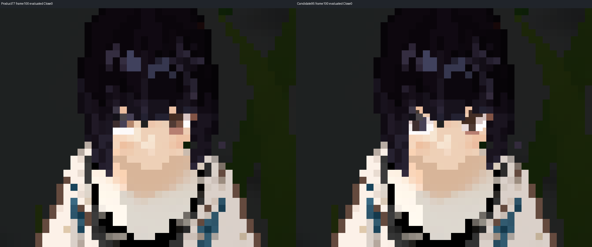
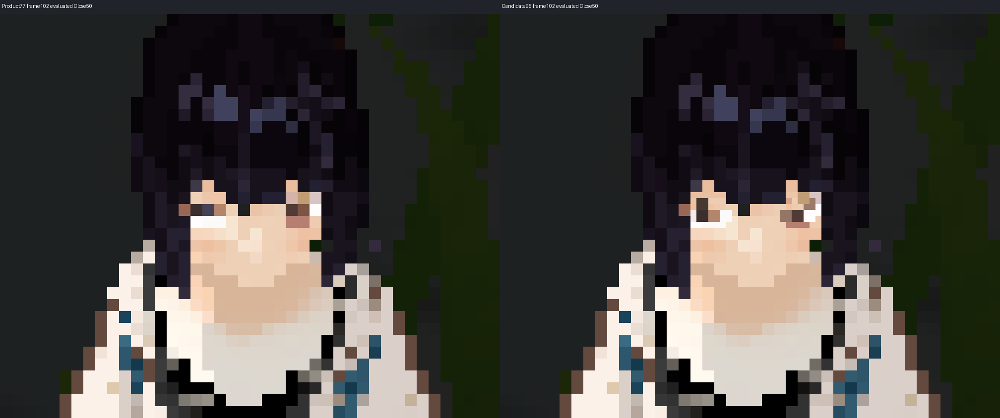
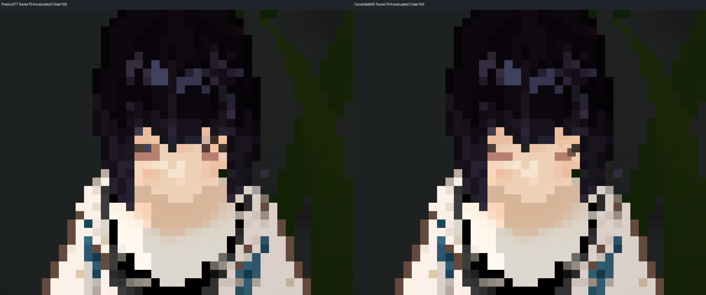
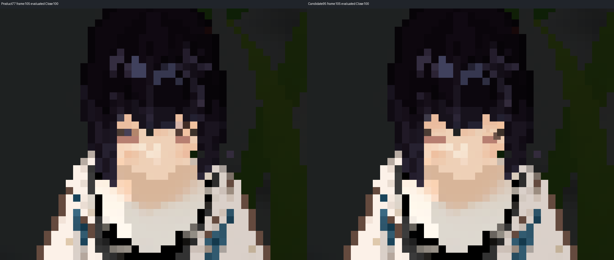
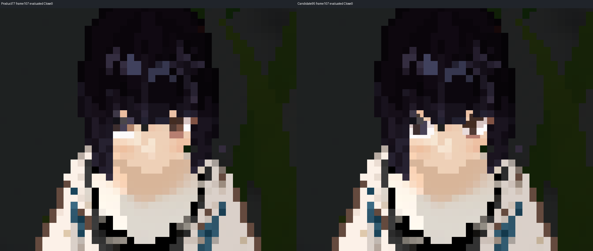
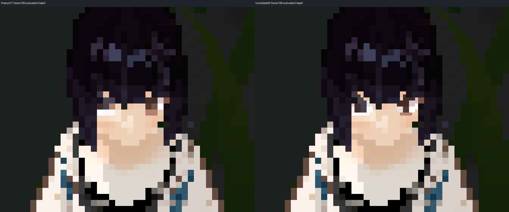

제품77 유지 · 미관 채택 아님 · 실시간 제품 통합 아님
실제 Play에서 평가 메쉬와 일치하는 열린 눈/부분 Close/완전 Close/재개방 7개 상태를 확보했습니다. 같은 눈 원본 파츠를 외부 가림으로 다시 계산하던 중복과, native-lid 보호를 홍채·흰자 전체 보호로 읽던 오류를 후보에서 구분했습니다. 바탕은 동일 프레임에 실제 렌더된 피부 표본만 사용합니다.
공동 선택·원본 ray 판정은 오프라인에서 수행했고, 최종 색/실제 owner/depth 대입 21개를 격리 GPU로 재생했습니다. Float32 차이0, 선택 테이블 밖 출력0, 현재 프레임 바탕 누락0, 미확정 출력0입니다. owner.w는 alpha가 아닌 원본 primitive ID입니다.
완전 Close에서 후보의 홍채·흰자 owner0이며 원래 열린 상태와 재개방 canonical support가 같습니다. 부분 Close 한 셀(12,4)은 mass7:7 동률이라 같은 원본 홍채 texel이 현재에도 보이는 경우에만 이전 정체성으로 선택했습니다. 첫 프레임부터 동률인 상태는 해결되지 않았습니다. 수치 통과로 눈 디자인의 정답을 주장하지 않습니다.
확대 비교에서 눈이 더 크게 드러나고 피부 바탕의 스타일도 달라집니다. 원본 bank의 색과 실제 source 피부색을 그대로 가져온 결과이며, 이 외관은 미술 승인되지 않았습니다. 회전·보행의 최종 합성 시간 안정성은 검증하지 않았습니다.
결과·복원·남은 한계 · 검사150개 · 셀/원본 UV·primitive/바탕 근거 · 프레임 수치 · 공동 선택 코드 · 격리 Graph source
아래 contact는 nearest ×8. 원래 크기는 각 프레임에 별도 표시됩니다.

| frame | evaluated Close | 새 native픽셀 | 현재 바탕픽셀 | 안검 보호 | 미확정 |
|---|---|---|---|---|---|
| 99 | 0 | 52 | 3 | 12 | 0 |
| 100 | 0 | 52 | 3 | 12 | 0 |
| 102 | 50 | 33 | 21 | 8 | 0 |
| 104 | 100 | 3 | 35 | 8 | 0 |
| 105 | 100 | 3 | 35 | 8 | 0 |
| 107 | 0 | 52 | 3 | 12 | 0 |
| 108 | 0 | 52 | 3 | 12 | 0 |
7상태 느린 비교 GIF — 조건 충족 시 저장한 상태를350ms씩 재생한 것으로, 실시간 연속 영상이 아닙니다.
원래 native 크기 — 왼쪽 제품77, 오른쪽 격리 후보95. 둘 다 같은 프레임 ROI.

원래 native 크기 — 왼쪽 제품77, 오른쪽 격리 후보95. 둘 다 같은 프레임 ROI.

원래 native 크기 — 왼쪽 제품77, 오른쪽 격리 후보95. 둘 다 같은 프레임 ROI.

원래 native 크기 — 왼쪽 제품77, 오른쪽 격리 후보95. 둘 다 같은 프레임 ROI.

원래 native 크기 — 왼쪽 제품77, 오른쪽 격리 후보95. 둘 다 같은 프레임 ROI.

원래 native 크기 — 왼쪽 제품77, 오른쪽 격리 후보95. 둘 다 같은 프레임 ROI.

원래 native 크기 — 왼쪽 제품77, 오른쪽 격리 후보95. 둘 다 같은 프레임 ROI.
